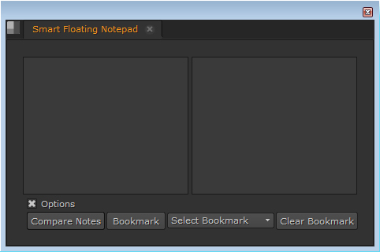

Description:
Smart Floating Notepad is a notepad with various features. Unlike StickyNote in Nuke it will always float in front of you whether you are working with full viewer or in 3D. It is also pane dockable.

Features:
•Options - Check this to view all features or uncheck to hide.
•Compare Notes - Brings second notepad for comparing notes with first notepad.
•Bookmark - Bookmark first notepad's notes.
•Select Bookmark - Select a bookmark to view it, It will open bookmark in second notepad.
•Clear Bookmark - Delete selected bookmark.
Operation:
Open Smart Floating Notepad from Pr_Suite Nuke menu or use the hotkey assigned to it.